Names: Raghav Joshi, Akshay Karthik-Manimaran, Rohan Wadhwa, Anirudh Suresh
Raghav Joshi: Introduction, data cleaning/preprocessing, hypothesis
testing #1, ML Algorithm design/development/training
Akshay Karthik-Manimaran: Visualizations in introduction, hypothesis
testing #2 and #3, conclusion
Rohan Wadhwa: Project idea, outlier detection, ML algorithm
analysis
Anirudh Suresh: Neural Network, Visualization
Gas prices have become central to Americans’ everyday lives; being able to predict gas prices, or find a relation between gas prices and other data points can be extremely useful in many situations.
In this project, we will explore the relationship between gas prices and certain transportation related metrics. We will also see if either of these can be used to predict the other using machine learning or neural networks. One would assume that an increase in gas prices would lead to an increase in public transportation usage, this is one of the main things that we will explore with hypothesis testing.
Such questions are important to explore because it helps readers understand whether gas prices have such a profound effect on consumers that it changes their transportation habits. Answering this question can help policymakers decide on whether or not to expand public transportation options.
Fluctuations in gas prices are also indicative of the economy; looking at how changes in the economy influence transportation usage is critical to auto manufacturers and services like the metro, as it provides an insight of future revenue.
Conversely, an increase in public transportation usage could potentially cause a decrease in consumers causing gas prices to increase to maintain a profit. But this can This in turn may as fewer people are driving their own vehicles, and thus buying their own gas.
We got the data from the following sites: https://www.kaggle.com/datasets/utkarshx27/monthly-transportation-statistics and https://www.kaggle.com/datasets/mruanova/us-gasoline-and-diesel-retail-prices-19952021
Step 1: Identifying NaNs
import pandas as pd
import matplotlib.pyplot as plt
import seaborn as sns
import matplotlib.ticker as ticker
from sklearn.ensemble import IsolationForest
from sklearn.preprocessing import MinMaxScaler
from scipy.stats import f_oneway
from statsmodels.stats.multicomp import pairwise_tukeyhsd
from scipy.stats import ttest_rel
from sklearn.impute import KNNImputer
import numpy as np
from scipy import stats
from scipy.stats import mannwhitneyu
transportation_df = pd.read_csv('Monthly_Transportation_Statistics.csv')
gasprices_df = pd.read_csv('USGasanddieselprices.csv')
pd.set_option('display.max_columns', None)
pd.set_option('display.max_rows', None)
pd.set_option('display.width', None)
#Selecting the desired columns
transportation_df = transportation_df[['Index', 'Date', 'U.S. Airline Traffic - Total - Seasonally Adjusted', 'Transit Ridership - Other Transit Modes - Adjusted',
'Transit Ridership - Fixed Route Bus - Adjusted', 'Transit Ridership - Urban Rail - Adjusted', 'Highway Fuel Price - Regular Gasoline', 'Passenger Rail Passengers',
'Passenger Rail Total Train Miles', 'Personal Spending on Transportation - Gasoline and Other Energy Goods - Seasonally Adjusted']]
gasprices_df = gasprices_df[['Date', 'A1']]
#Converting to Datetime object
transportation_df['Date'] = pd.to_datetime(transportation_df['Date'])
gasprices_df['Date'] = pd.to_datetime(gasprices_df['Date'])
transportation_df = transportation_df.loc[transportation_df['Date'] >= '01-01-1975']
display(transportation_df.shape)
#Observing the number of NaNs
total_nan = 0
for curr in range(0, len(transportation_df.columns)):
print("Column: ", transportation_df.columns[curr] , "----- Number of NaN: ", transportation_df.iloc[:, curr].isnull().sum())
total_nan += transportation_df.iloc[:, curr].isnull().sum()
print('Total NaN: ', total_nan)
print('Gas Prices Missing: ', gasprices_df.loc[:, 'A1'].isnull().sum())
#Pie chart to show the distribution among the transportation
pie_df = transportation_df[['U.S. Airline Traffic - Total - Seasonally Adjusted', 'Transit Ridership - Other Transit Modes - Adjusted',
'Transit Ridership - Fixed Route Bus - Adjusted', 'Transit Ridership - Urban Rail - Adjusted', 'Highway Fuel Price - Regular Gasoline', 'Passenger Rail Passengers',
'Passenger Rail Total Train Miles', 'Personal Spending on Transportation - Gasoline and Other Energy Goods - Seasonally Adjusted']]
colors = sns.color_palette('bright')[0:10]
plt.pie(x = pie_df.isna().sum(), labels = pie_df.isna().sum().index, colors = colors, autopct='%.0f%%')
plt.tight_layout()
plt.show()/var/folders/kt/bb0_zk5n4x1g8hsp0gmxbnsm0000gn/T/ipykernel_7973/3847446302.py:29: UserWarning: Could not infer format, so each element will be parsed individually, falling back to `dateutil`. To ensure parsing is consistent and as-expected, please specify a format.
transportation_df['Date'] = pd.to_datetime(transportation_df['Date'])
(588, 10)Column: Index ----- Number of NaN: 0
Column: Date ----- Number of NaN: 0
Column: U.S. Airline Traffic - Total - Seasonally Adjusted ----- Number of NaN: 521
Column: Transit Ridership - Other Transit Modes - Adjusted ----- Number of NaN: 336
Column: Transit Ridership - Fixed Route Bus - Adjusted ----- Number of NaN: 336
Column: Transit Ridership - Urban Rail - Adjusted ----- Number of NaN: 336
Column: Highway Fuel Price - Regular Gasoline ----- Number of NaN: 200
Column: Passenger Rail Passengers ----- Number of NaN: 16
Column: Passenger Rail Total Train Miles ----- Number of NaN: 16
Column: Personal Spending on Transportation - Gasoline and Other Energy Goods - Seasonally Adjusted ----- Number of NaN: 501
Total NaN: 2262
Gas Prices Missing: 0
/var/folders/kt/bb0_zk5n4x1g8hsp0gmxbnsm0000gn/T/ipykernel_7973/3847446302.py:49: UserWarning: Tight layout not applied. The left and right margins cannot be made large enough to accommodate all Axes decorations.
plt.tight_layout()
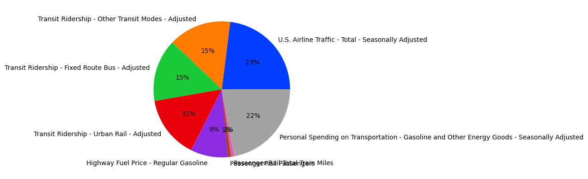
The two overlapping partitons represent Passenger Total Train Miles and Pasenger Rail Passengers. Both are 1% of the pie chart.
Conclusion: We have two datasets, one is for transportation, another is for gas prices specifically. As the chart above demonstrates, there is a lot of data missing in the transportation dataframe especially from airline traffic and personal spending on transportation. Looking at the dataframes themselves, one can notice that for all missing data, the data is not missing after a certain date, meaning that the data is missing not at random (MNAR) because there is a clear time frame where the data is missing. In fact, none of the choosen columns have any data before 1975. The gas dataframe on the other hand, has no prices missing as we are using the "All Grades All Formulations Gasoline Prices" column only for simplicity. Features that are overrepresentative are Passenger Rail Passengers, Passenger Total Train Miles, and gas prices. This is because other feature are missing large portions of their data in this time frame. In addition, features that may be correlated are Highway Fuel Price and Personal Spending on Transportation.
We would like to explore if there is a correlation between gas prices and transit ridership. In this checkpoint, attributes that will be important are all froms of transit ridership and gas prices.
Step 2: Removing NaNs
gasprices_df.rename(columns={"A1": "Weekly Retail Gasoline Prices(All Grades Formulation)"}, inplace=True)
gasprices_df['Date'] = pd.to_datetime(gasprices_df['Date'])
display(gasprices_df.head())| Date | Weekly Retail Gasoline Prices(All Grades Formulation) | |
|---|---|---|
| 0 | 1995-01-02 | 1.127 |
| 1 | 1995-01-09 | 1.134 |
| 2 | 1995-01-16 | 1.126 |
| 3 | 1995-01-23 | 1.132 |
| 4 | 1995-01-30 | 1.131 |
The only column used from the gas prices csv file was renamed from "A1" to "Weekly Retail Gasoline Prices(All Grades Formulation)" to indicate what the column values represent. The purpose of renaming not only serves as an indicator to people who view the gas prices csv but it also helps in making it clear what is being predicted during the ML model phase of this project.
# List only the data columns that can be NaN (exclude 'Index' and 'Date')
cols = [
'U.S. Airline Traffic - Total - Seasonally Adjusted',
'Transit Ridership - Other Transit Modes - Adjusted',
'Transit Ridership - Fixed Route Bus - Adjusted',
'Transit Ridership - Urban Rail - Adjusted',
'Highway Fuel Price - Regular Gasoline',
'Passenger Rail Passengers',
'Passenger Rail Total Train Miles',
'Personal Spending on Transportation - Gasoline and Other Energy Goods - Seasonally Adjusted'
]
print(transportation_df[cols].isna().sum())
print(transportation_df.shape)
print("\n")
# Drop rows where all specified columns are NaN
transportation_df = transportation_df.dropna(subset=cols, how='all')
print(transportation_df[cols].isna().sum())
print(transportation_df.shape)U.S. Airline Traffic - Total - Seasonally Adjusted 521
Transit Ridership - Other Transit Modes - Adjusted 336
Transit Ridership - Fixed Route Bus - Adjusted 336
Transit Ridership - Urban Rail - Adjusted 336
Highway Fuel Price - Regular Gasoline 200
Passenger Rail Passengers 16
Passenger Rail Total Train Miles 16
Personal Spending on Transportation - Gasoline and Other Energy Goods - Seasonally Adjusted 501
dtype: int64
(588, 10)
U.S. Airline Traffic - Total - Seasonally Adjusted 513
Transit Ridership - Other Transit Modes - Adjusted 328
Transit Ridership - Fixed Route Bus - Adjusted 328
Transit Ridership - Urban Rail - Adjusted 328
Highway Fuel Price - Regular Gasoline 192
Passenger Rail Passengers 8
Passenger Rail Total Train Miles 8
Personal Spending on Transportation - Gasoline and Other Energy Goods - Seasonally Adjusted 493
dtype: int64
(580, 10)
When looking at the three transit columns, it can be noticed that the data only exists from 2002 to the end of 2022, causing many nan. To solve this, we will create a seperate dataframe just with the three columns.
#Checking for NaNs
transit_df = transportation_df[[ 'Date','Transit Ridership - Other Transit Modes - Adjusted',
'Transit Ridership - Fixed Route Bus - Adjusted',
'Transit Ridership - Urban Rail - Adjusted']]
transit_df = transit_df.loc[ '2002-01-01' <= transit_df['Date'], :]
transit_df = transit_df.loc[ transit_df['Date'] <= '2022-12-01', :]
print(transit_df.isnull().sum())
#display(transit_df.head())Date 0
Transit Ridership - Other Transit Modes - Adjusted 0
Transit Ridership - Fixed Route Bus - Adjusted 0
Transit Ridership - Urban Rail - Adjusted 0
dtype: int64
The dates for which all eight of those data columns are simultaneously missing will be dropped since they will not give us any information.
rail_cols = ['Passenger Rail Passengers', 'Passenger Rail Total Train Miles']
# Fill NaN values in the rail columns with forward and backward fill
transportation_df[rail_cols] = (transportation_df[rail_cols].ffill().bfill())
print(transportation_df[rail_cols].isna().sum())Passenger Rail Passengers 0
Passenger Rail Total Train Miles 0
dtype: int64
Since the number of NaNs is only 8, we use the nearest value to imputate the NaNs for the above two fields.
#Created a dataframe within 1975 till 1990-08-01. Outside of this time period, there are many columns where there are NaNs.
col = 'Highway Fuel Price - Regular Gasoline'
start, end = '1975-01-01', '1990-08-01'
c_hwy = (transportation_df['Date'] >= start) & (transportation_df['Date'] <= end)
df_pre1990 = transportation_df.loc[c_hwy].copy()
#Dropping all the columns where every single entry is a NaN.
df_pre1990 = df_pre1990.dropna(axis=1, how='all')
print(df_pre1990.shape)
print("Remaining columns:", list(df_pre1990.columns))
print(df_pre1990.isna().sum())(188, 4)
Remaining columns: ['Index', 'Date', 'Passenger Rail Passengers', 'Passenger Rail Total Train Miles']
Index 0
Date 0
Passenger Rail Passengers 0
Passenger Rail Total Train Miles 0
dtype: int64
Since most of the columns have all NaNs in from the period of 1975 to 1990, we create a seperate data (df_pre1990) frame during that time. Columns where all values are NaNs are dropeed and the other NaNs
#Creating a dataframe between 1990 and 2001
cols = [
'Transit Ridership - Other Transit Modes - Adjusted',
'Transit Ridership - Fixed Route Bus - Adjusted',
'Transit Ridership - Urban Rail - Adjusted'
]
#Using the information found, creating a datafarme between 1990 and 2001 was beneficial.
start, end = '1990-09-01', '2001-12-01'
mask = (transportation_df['Date'] >= start) & (transportation_df['Date'] <= end)
df_pre2002 = transportation_df.loc[mask].copy()
df_pre2002 = df_pre2002.dropna(axis=1, how='all')
print(df_pre2002.shape)
print("Remaining columns:", list(df_pre2002.columns))
df_pre2002 = df_pre2002.ffill().bfill()
print(df_pre2002.isna().sum())(136, 5)
Remaining columns: ['Index', 'Date', 'Highway Fuel Price - Regular Gasoline', 'Passenger Rail Passengers', 'Passenger Rail Total Train Miles']
Index 0
Date 0
Highway Fuel Price - Regular Gasoline 0
Passenger Rail Passengers 0
Passenger Rail Total Train Miles 0
dtype: int64
All three transit‐ridership columns in transportation_df share the same missing‐value dates. In other words, none of these series exist before a common “start date.” Moreover, the NaNs are grouped from 1990-01-01 to 2001-12-01 and then from 2023-01-01 to 2023-07-01. Thus, we make a seperate data frame to analyse the data in this period. All the remaining NaNs are handled using imputation from the nearest neighbour.
#Creating a new dataframe from 2002 to 2016
start_mid, end_mid = '2002-01-01', '2016-12-01'
mask_mid = (transportation_df['Date'] >= start_mid) & (transportation_df['Date'] <= end_mid)
df_2002_2016 = transportation_df.loc[mask_mid].copy()
df_2002_2016 = df_2002_2016.dropna(axis=1, how='all')
#Displaying results
print("Shape:", df_2002_2016.shape)
print("Columns remaining:", df_2002_2016.columns.tolist())
print(df_2002_2016.isna().sum())Shape: (180, 9)
Columns remaining: ['Index', 'Date', 'Transit Ridership - Other Transit Modes - Adjusted', 'Transit Ridership - Fixed Route Bus - Adjusted', 'Transit Ridership - Urban Rail - Adjusted', 'Highway Fuel Price - Regular Gasoline', 'Passenger Rail Passengers', 'Passenger Rail Total Train Miles', 'Personal Spending on Transportation - Gasoline and Other Energy Goods - Seasonally Adjusted']
Index 0
Date 0
Transit Ridership - Other Transit Modes - Adjusted 0
Transit Ridership - Fixed Route Bus - Adjusted 0
Transit Ridership - Urban Rail - Adjusted 0
Highway Fuel Price - Regular Gasoline 0
Passenger Rail Passengers 0
Passenger Rail Total Train Miles 0
Personal Spending on Transportation - Gasoline and Other Energy Goods - Seasonally Adjusted 120
dtype: int64
col = 'U.S. Airline Traffic - Total - Seasonally Adjusted'
missing_air_dates = (transportation_df.loc[transportation_df[col].isna(), 'Date'].sort_values().unique())
#Creating a dataframe after 2016
cutoff = '2016-12-01'
df_post2016 = transportation_df.loc[transportation_df['Date'] > cutoff].copy()
#Dropped the columns where every value is a NaN
df_post2016 = df_post2016.dropna(axis=1, how='all')
df_post2016 = df_post2016.ffill().bfill()
print(df_post2016.shape)
print("Columns remaining:", df_post2016.columns.tolist())
#display(df_post2016)
#display(df_2002_2016)
#display(df_pre2002)
#display(df_pre1990)(76, 10)
Columns remaining: ['Index', 'Date', 'U.S. Airline Traffic - Total - Seasonally Adjusted', 'Transit Ridership - Other Transit Modes - Adjusted', 'Transit Ridership - Fixed Route Bus - Adjusted', 'Transit Ridership - Urban Rail - Adjusted', 'Highway Fuel Price - Regular Gasoline', 'Passenger Rail Passengers', 'Passenger Rail Total Train Miles', 'Personal Spending on Transportation - Gasoline and Other Energy Goods - Seasonally Adjusted']
Step 3: Exploring Outliers
Here we explore how different subsets of the data have or don't have outliers.
df_list = [df_pre1990, df_pre2002, df_2002_2016, df_post2016]
df_names = ["Pre 1990", "Pre 2002", "2002 to 2016", "Post 2016"]
updated_dfs = []
#Looping through lists containing all the datafarmes and creating a whisker plot for each column of each dataframe
for df_name, df in zip(df_names, df_list):
columns_plot = [col for col in df.columns[2:] if isinstance(col, str) and not col.startswith("Outliers")]
fig, axes = plt.subplots(nrows=len(columns_plot), ncols=1, figsize=(6,3 * len(columns_plot)))
if len(columns_plot)==1:
axes = [axes]
for ax, column in zip(axes,columns_plot):
df[column].plot.box(ax=ax)
ax.set_title(f"{df_name}: Whisker Plot for {column}")
ax.ticklabel_format(style="plain", axis="y")
ax.yaxis.set_major_formatter(ticker.FuncFormatter(lambda x, _: f"{int(x):,.2f}"))
#Added Isolation Forest for Outlier Detection
iso_forest = IsolationForest(contamination=0.1, random_state=43)
predictions = iso_forest.fit_predict(df[[column]])
#Created a outlier flagging column for each respective column of each dataframe.
flag_title = f"Outliers Flagged {column}"
df[flag_title] = (predictions == -1).astype(int)
columns = list(df.columns)
if flag_title in columns:
columns.remove(flag_title)
index = columns.index(column)
columns.insert(index + 1, flag_title)
df = df[columns]
plt.tight_layout()
plt.show()
print(f"\n{df_name}:")
display(df.head())
updated_dfs.append(df)
#Updated the dataframes to include the flagging column
df_pre1990, df_pre2002, df_2002_2016, df_post2016 = updated_dfs/var/folders/kt/bb0_zk5n4x1g8hsp0gmxbnsm0000gn/T/ipykernel_7973/2578366497.py:25: SettingWithCopyWarning:
A value is trying to be set on a copy of a slice from a DataFrame.
Try using .loc[row_indexer,col_indexer] = value instead
See the caveats in the documentation: https://pandas.pydata.org/pandas-docs/stable/user_guide/indexing.html#returning-a-view-versus-a-copy
df[flag_title] = (predictions == -1).astype(int)
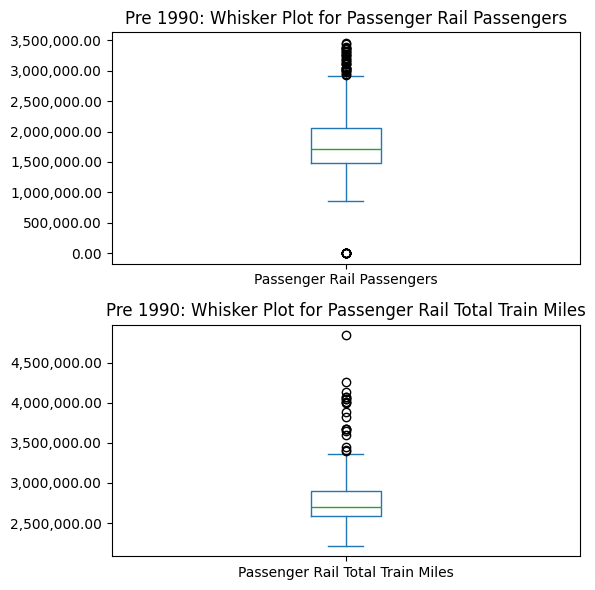
Pre 1990:
| Index | Date | Passenger Rail Passengers | Outliers Flagged Passenger Rail Passengers | Passenger Rail Total Train Miles | Outliers Flagged Passenger Rail Total Train Miles | |
|---|---|---|---|---|---|---|
| 336 | 336 | 1975-01-01 | 0.0 | 1 | 4134425.0 | 1 |
| 337 | 337 | 1975-02-01 | 0.0 | 1 | 3600736.0 | 1 |
| 338 | 338 | 1975-03-01 | 0.0 | 1 | 4067192.0 | 0 |
| 339 | 339 | 1975-04-01 | 0.0 | 1 | 4000157.0 | 1 |
| 340 | 340 | 1975-05-01 | 0.0 | 1 | 4050197.0 | 0 |
/var/folders/kt/bb0_zk5n4x1g8hsp0gmxbnsm0000gn/T/ipykernel_7973/2578366497.py:25: SettingWithCopyWarning:
A value is trying to be set on a copy of a slice from a DataFrame.
Try using .loc[row_indexer,col_indexer] = value instead
See the caveats in the documentation: https://pandas.pydata.org/pandas-docs/stable/user_guide/indexing.html#returning-a-view-versus-a-copy
df[flag_title] = (predictions == -1).astype(int)
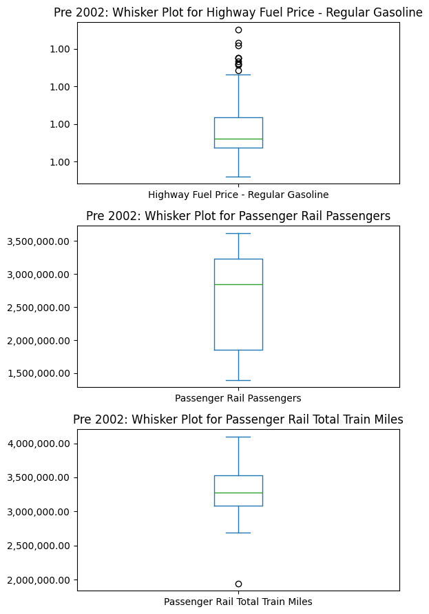
Pre 2002:
| Index | Date | Highway Fuel Price - Regular Gasoline | Outliers Flagged Highway Fuel Price - Regular Gasoline | Passenger Rail Passengers | Outliers Flagged Passenger Rail Passengers | Passenger Rail Total Train Miles | Outliers Flagged Passenger Rail Total Train Miles | |
|---|---|---|---|---|---|---|---|---|
| 524 | 524 | 1990-09-01 | 1.258 | 0 | 3073787.0 | 0 | 3269824.0 | 0 |
| 525 | 525 | 1990-10-01 | 1.335 | 1 | 3291394.0 | 0 | 3613612.0 | 0 |
| 526 | 526 | 1990-11-01 | 1.324 | 0 | 3181611.0 | 0 | 3356131.0 | 0 |
| 527 | 527 | 1990-12-01 | 1.324 | 0 | 3023138.0 | 0 | 3395859.0 | 0 |
| 528 | 528 | 1991-01-01 | 1.324 | 0 | 3097361.0 | 0 | 3174949.0 | 0 |
/var/folders/kt/bb0_zk5n4x1g8hsp0gmxbnsm0000gn/T/ipykernel_7973/2578366497.py:25: SettingWithCopyWarning:
A value is trying to be set on a copy of a slice from a DataFrame.
Try using .loc[row_indexer,col_indexer] = value instead
See the caveats in the documentation: https://pandas.pydata.org/pandas-docs/stable/user_guide/indexing.html#returning-a-view-versus-a-copy
df[flag_title] = (predictions == -1).astype(int)
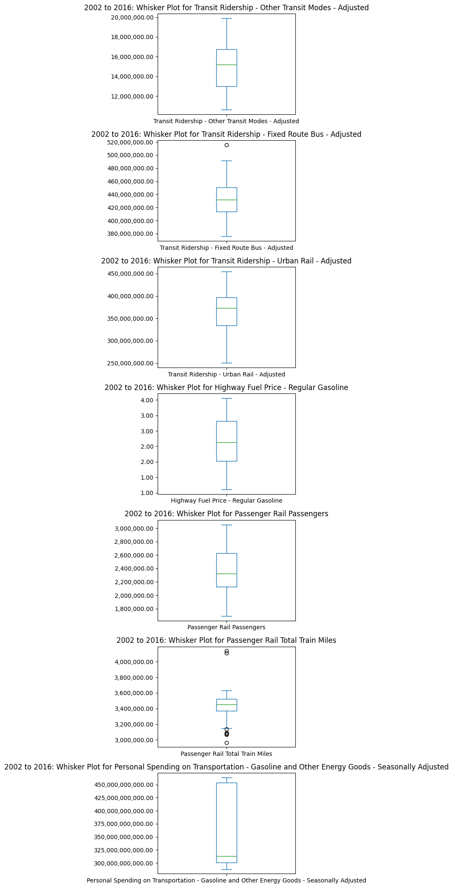
2002 to 2016:
| Index | Date | Transit Ridership - Other Transit Modes - Adjusted | Outliers Flagged Transit Ridership - Other Transit Modes - Adjusted | Transit Ridership - Fixed Route Bus - Adjusted | Outliers Flagged Transit Ridership - Fixed Route Bus - Adjusted | Transit Ridership - Urban Rail - Adjusted | Outliers Flagged Transit Ridership - Urban Rail - Adjusted | Highway Fuel Price - Regular Gasoline | Outliers Flagged Highway Fuel Price - Regular Gasoline | Passenger Rail Passengers | Outliers Flagged Passenger Rail Passengers | Passenger Rail Total Train Miles | Outliers Flagged Passenger Rail Total Train Miles | Personal Spending on Transportation - Gasoline and Other Energy Goods - Seasonally Adjusted | Outliers Flagged Personal Spending on Transportation - Gasoline and Other Energy Goods - Seasonally Adjusted | |
|---|---|---|---|---|---|---|---|---|---|---|---|---|---|---|---|---|
| 660 | 660 | 2002-01-01 | 11117998.0 | 1 | 430318522.0 | 0 | 276530991.0 | 0 | 1.107 | 1 | 1759871.0 | 1 | 3449820.0 | 0 | 4.524630e+11 | 0 |
| 661 | 661 | 2002-02-01 | 10801941.0 | 1 | 414396657.0 | 0 | 260745192.0 | 1 | 1.114 | 1 | 1772163.0 | 1 | 3146083.0 | 1 | NaN | 0 |
| 662 | 662 | 2002-03-01 | 11444827.0 | 0 | 440766593.0 | 0 | 288404172.0 | 0 | 1.249 | 1 | 2021506.0 | 0 | 3474697.0 | 0 | NaN | 0 |
| 663 | 663 | 2002-04-01 | 11701049.0 | 0 | 438453423.0 | 0 | 292201780.0 | 1 | 1.397 | 0 | 2049477.0 | 0 | 3375089.0 | 0 | 4.567650e+11 | 0 |
| 664 | 664 | 2002-05-01 | 12019400.0 | 0 | 441175267.0 | 0 | 298698607.0 | 0 | 1.392 | 0 | 2114453.0 | 0 | 3544543.0 | 0 | NaN | 0 |
/var/folders/kt/bb0_zk5n4x1g8hsp0gmxbnsm0000gn/T/ipykernel_7973/2578366497.py:25: SettingWithCopyWarning:
A value is trying to be set on a copy of a slice from a DataFrame.
Try using .loc[row_indexer,col_indexer] = value instead
See the caveats in the documentation: https://pandas.pydata.org/pandas-docs/stable/user_guide/indexing.html#returning-a-view-versus-a-copy
df[flag_title] = (predictions == -1).astype(int)
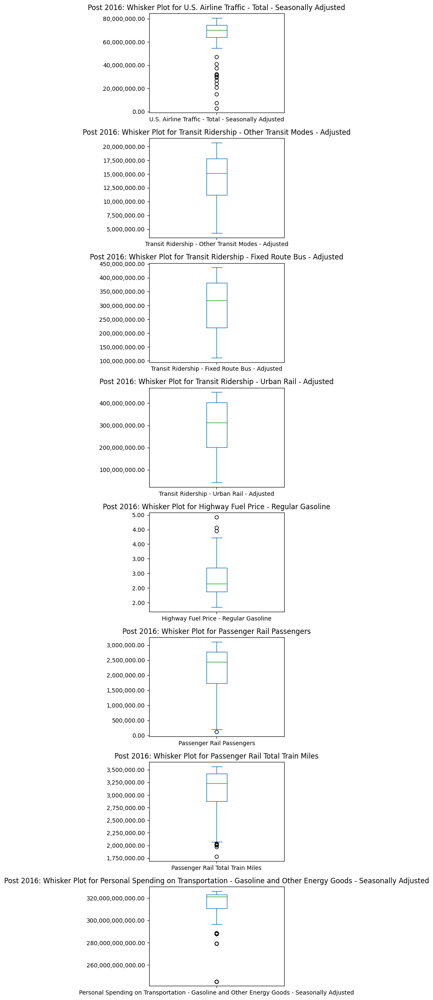
Post 2016:
| Index | Date | U.S. Airline Traffic - Total - Seasonally Adjusted | Outliers Flagged U.S. Airline Traffic - Total - Seasonally Adjusted | Transit Ridership - Other Transit Modes - Adjusted | Outliers Flagged Transit Ridership - Other Transit Modes - Adjusted | Transit Ridership - Fixed Route Bus - Adjusted | Outliers Flagged Transit Ridership - Fixed Route Bus - Adjusted | Transit Ridership - Urban Rail - Adjusted | Outliers Flagged Transit Ridership - Urban Rail - Adjusted | Highway Fuel Price - Regular Gasoline | Outliers Flagged Highway Fuel Price - Regular Gasoline | Passenger Rail Passengers | Outliers Flagged Passenger Rail Passengers | Passenger Rail Total Train Miles | Outliers Flagged Passenger Rail Total Train Miles | Personal Spending on Transportation - Gasoline and Other Energy Goods - Seasonally Adjusted | Outliers Flagged Personal Spending on Transportation - Gasoline and Other Energy Goods - Seasonally Adjusted | |
|---|---|---|---|---|---|---|---|---|---|---|---|---|---|---|---|---|---|---|
| 840 | 840 | 2017-01-01 | 70190000.0 | 0 | 15695383.0 | 0 | 379032287.0 | 0 | 385406234.0 | 0 | 2.349 | 0 | 2330923.0 | 0 | 3432608.0 | 0 | 3.209980e+11 | 0 |
| 841 | 841 | 2017-02-01 | 69790000.0 | 0 | 15160465.0 | 0 | 373246708.0 | 0 | 367315442.0 | 0 | 2.304 | 0 | 2153891.0 | 0 | 3121837.0 | 0 | 3.209980e+11 | 0 |
| 842 | 842 | 2017-03-01 | 69680000.0 | 0 | 17507282.0 | 0 | 415647479.0 | 1 | 430111836.0 | 0 | 2.325 | 0 | 2659548.0 | 0 | 3464598.0 | 0 | 3.209980e+11 | 0 |
| 843 | 843 | 2017-04-01 | 70350000.0 | 0 | 17044306.0 | 0 | 388066756.0 | 0 | 407072908.0 | 0 | 2.417 | 0 | 2764389.0 | 0 | 3342228.0 | 0 | 3.260000e+11 | 0 |
| 844 | 844 | 2017-05-01 | 70720000.0 | 0 | 18539625.0 | 0 | 405517838.0 | 0 | 429163483.0 | 0 | 2.391 | 0 | 2822981.0 | 0 | 3487216.0 | 0 | 3.260000e+11 | 0 |
I identified the outliers for each column of each dataframe and then flagged the outliers by using IsolationForest. Then the outliers were displayed in their own respective flagging columns that are placed to the right of the columns each flagging column corresponds with. The outliers are given a one while non outliers are given the default zero.
The purpose of flagging outliers is so that we can currently obtain information on what are the extreme values in each respective era. When we eventually train our Machine Learning model we can make it account for whether a values was an outlier or not in that respective era. Then the model will be able to take all the outliers and rank them on what was the most extreme compared to all eras for that column. With this information we will be able to determine what was time period or even year was considered an anomaly when compared to other eras. Determining on a global level what is considered an anomaly based on the value's extremity is crucial for the model. This is because our primary objective is to be able to make future predictions on how gas prices impact transportation and rail usage. Knowing whether an extreme value is an anomaly or part of a trend can help the model accurately predict the future pattern of gas prices impact on transportation and rail usage.
Test 1: Mann-Whitney U Test
At Significance level of α = 0.05
Null Hypothesis: There is no difference between the amount of rail passengers and the amount of bus passengers.
Alternative Hypothesis: There are significantly more bus passengers than rail passengers.
stats, pval = mannwhitneyu(transit_df.iloc[:, [2]], transit_df.iloc[:, [ 3]])
print("P-value for Mann-Whitney U: ", pval)P-value for Mann-Whitney U: [4.61525205e-25]
Conclusion: Since the p-value returned is less than .05, we reject the null hypothesis. There is a signficantly more amount of passengers that prefer to use buses than rail. Rail usage might be more expensive and less accessable. Meaning gas prices will not have the same effect on railways and buses.
plt.figure(figsize=(15,7))
plt.plot(transit_df['Date'], transit_df['Transit Ridership - Urban Rail - Adjusted'], label = 'Rail')
plt.plot(transit_df['Date'], transit_df['Transit Ridership - Fixed Route Bus - Adjusted'], label = 'Bus')
plt.legend()
plt.xlabel('Date')
plt.ylabel('Rail Ridership')
plt.title('Line Plot for Rail Useage')
plt.show()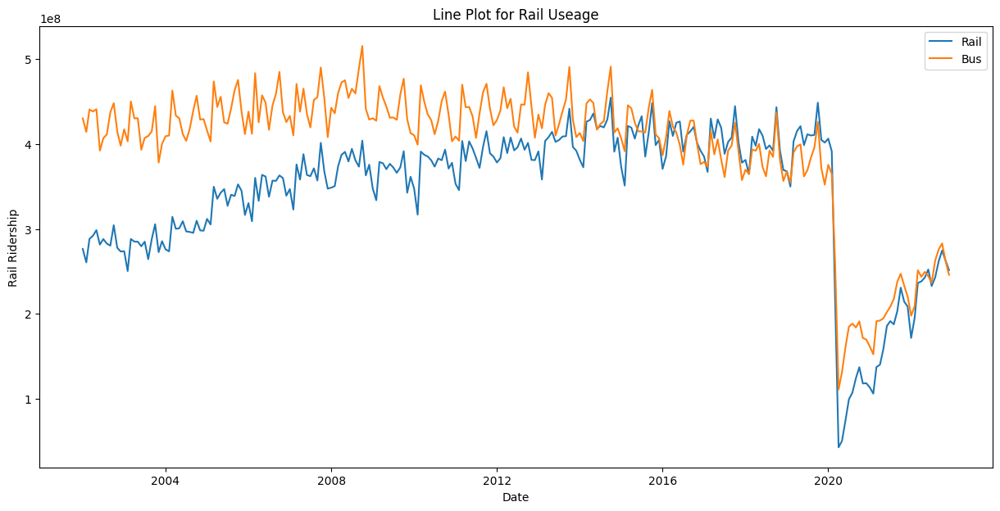
This graph indicates the predominant usage of passengers preferring bus over rail. This shows that buses have more of an impact than rail when considering the impacts of gasprices.
Test 2: ANOVA Test
At a significance level of 95% , α = 0.05
Null Hypothesis: There is no difference in Transit ridership when the gas prices are low/medium/high.
Alternative Hypthesis: There is a difference between transit ridership when the gas prices are low/medium/high.
#Creating fresh dataframes and setting up the dataframe from the CSV file.
gasprices_b_df = pd.read_csv('USGasanddieselprices.csv')
transportation_b_df = pd.read_csv('Monthly_Transportation_Statistics.csv')
#Sellecting desirable columns.
gasprices_b_df = gasprices_b_df[['Date','A1']]
transportation_b_df = transportation_df[['Index', 'Date', 'U.S. Airline Traffic - Total - Seasonally Adjusted', 'Transit Ridership - Other Transit Modes - Adjusted',
'Transit Ridership - Fixed Route Bus - Adjusted', 'Transit Ridership - Urban Rail - Adjusted', 'Highway Fuel Price - Regular Gasoline', 'Passenger Rail Passengers',
'Passenger Rail Total Train Miles', 'Personal Spending on Transportation - Gasoline and Other Energy Goods - Seasonally Adjusted']]
#converting to Datetime Object.
gasprices_b_df['Date'] = pd.to_datetime(gasprices_b_df['Date'])
transportation_b_df['Date'] = pd.to_datetime(transportation_b_df['Date'])
#Limiting the range of the data to align the dataframes.
gasprices_b_df = gasprices_b_df[gasprices_b_df['Date'] >= '2002-01-01']
gasprices_b_df = gasprices_b_df[gasprices_b_df['Date'] <= '2021-01-04']
transportation_b_df = transportation_b_df.loc[transportation_df['Date'] >= '2002-01-01']
transportation_b_df = transportation_b_df.loc[transportation_b_df['Date'] <= '2021-01-01']The "Transit Ridership - Urban Rail - Adjusted" column from the transportation_b_df is going to get dropped due to it not having as much of an impact with regards to Transit Ridership as a whole. This was proven in the Mann-Whitney U test which rejected the null hypothesis of there being no difference in the passenger ridership of rail and bus.
#It groups the gasprices dataframe from weekly to montly.
gasprices_month_df = gasprices_b_df.groupby(pd.Grouper( key = 'Date', freq = 'ME')).agg({'A1': 'mean'}).reset_index()
#Setting the range to determine what is considered a low, medium, and high gasprice.
low_gasprices = gasprices_month_df[gasprices_month_df['A1'] < 1.5]
medium_gasprices = gasprices_month_df[(gasprices_month_df['A1'] >= 1.5) & (gasprices_month_df['A1'] <= 2.3)]
high_gasprices = gasprices_month_df[gasprices_month_df['A1'] > 2.3]
#A new dataframe without the transit urban rail.
total_transit_ridership = transportation_b_df[['Date', 'Transit Ridership - Fixed Route Bus - Adjusted', 'Transit Ridership - Other Transit Modes - Adjusted']]
#A new column where all ridership except urban rail is included.
total_transit_ridership['Total Transit Ridership'] = total_transit_ridership[['Transit Ridership - Fixed Route Bus - Adjusted', 'Transit Ridership - Other Transit Modes - Adjusted']].sum(axis = 1)
total_transit_ridership = total_transit_ridership.drop(total_transit_ridership[['Transit Ridership - Fixed Route Bus - Adjusted', 'Transit Ridership - Other Transit Modes - Adjusted']], axis = 1)
#Converting total_transit_ridership, low_gasprices, medium_gasprices, and high_gasprices to a yyyy-mm basis so that they can be matched.
total_transit_ridership['YearMonth'] = total_transit_ridership['Date'].dt.strftime('%Y-%m') #yyyy-mm
low_gasprices['YearMonth'] = low_gasprices['Date'].dt.strftime('%Y-%m')
medium_gasprices['YearMonth'] = medium_gasprices['Date'].dt.strftime('%Y-%m')
high_gasprices['YearMonth'] = high_gasprices['Date'].dt.strftime('%Y-%m')
#Filtering out the transit ridership based on the gas price labels, low, medium, high.
low_merge = pd.merge(low_gasprices, total_transit_ridership, on = 'YearMonth', how = 'inner')
medium_merge = pd.merge(medium_gasprices, total_transit_ridership, on = 'YearMonth', how = 'inner')
high_merge = pd.merge(high_gasprices, total_transit_ridership, on = 'YearMonth', how = 'inner')
#extracting only the Transit ridership.
low_riders = low_merge['Total Transit Ridership']
medium_riders = medium_merge['Total Transit Ridership']
high_riders = high_merge['Total Transit Ridership']
#ANOVA Test
f_stat, p_val = f_oneway(low_riders, medium_riders, high_riders)
print(f"ANOVA Test results: \nF = {f_stat:.2f}, p = {p_val:.2f}\n\n\n")ANOVA Test results:
F = 9.82, p = 0.00
/var/folders/kt/bb0_zk5n4x1g8hsp0gmxbnsm0000gn/T/ipykernel_7973/2508139319.py:14: SettingWithCopyWarning:
A value is trying to be set on a copy of a slice from a DataFrame.
Try using .loc[row_indexer,col_indexer] = value instead
See the caveats in the documentation: https://pandas.pydata.org/pandas-docs/stable/user_guide/indexing.html#returning-a-view-versus-a-copy
total_transit_ridership['Total Transit Ridership'] = total_transit_ridership[['Transit Ridership - Fixed Route Bus - Adjusted', 'Transit Ridership - Other Transit Modes - Adjusted']].sum(axis = 1)
/var/folders/kt/bb0_zk5n4x1g8hsp0gmxbnsm0000gn/T/ipykernel_7973/2508139319.py:19: SettingWithCopyWarning:
A value is trying to be set on a copy of a slice from a DataFrame.
Try using .loc[row_indexer,col_indexer] = value instead
See the caveats in the documentation: https://pandas.pydata.org/pandas-docs/stable/user_guide/indexing.html#returning-a-view-versus-a-copy
low_gasprices['YearMonth'] = low_gasprices['Date'].dt.strftime('%Y-%m')
/var/folders/kt/bb0_zk5n4x1g8hsp0gmxbnsm0000gn/T/ipykernel_7973/2508139319.py:20: SettingWithCopyWarning:
A value is trying to be set on a copy of a slice from a DataFrame.
Try using .loc[row_indexer,col_indexer] = value instead
See the caveats in the documentation: https://pandas.pydata.org/pandas-docs/stable/user_guide/indexing.html#returning-a-view-versus-a-copy
medium_gasprices['YearMonth'] = medium_gasprices['Date'].dt.strftime('%Y-%m')
/var/folders/kt/bb0_zk5n4x1g8hsp0gmxbnsm0000gn/T/ipykernel_7973/2508139319.py:21: SettingWithCopyWarning:
A value is trying to be set on a copy of a slice from a DataFrame.
Try using .loc[row_indexer,col_indexer] = value instead
See the caveats in the documentation: https://pandas.pydata.org/pandas-docs/stable/user_guide/indexing.html#returning-a-view-versus-a-copy
high_gasprices['YearMonth'] = high_gasprices['Date'].dt.strftime('%Y-%m')
Conclusion: The ANOVA Test results indicate that there is a difference in transit ridership depending on the price of gas.What this means is that gas prices may have an affect on transit ridership or may indicate that there are other related factors that affect on transit ridership. A p-value of close to 0 indicates that we reject the null hypothesis since p-value of close to 0 <= 0.05 = α
#Converting the date format to yyyy-mm
gasprices_month_df['YearMonth'] = gasprices_month_df['Date'].dt.strftime("%Y-%m")
#Dropping the original Date columns
gasprices_month_df = gasprices_month_df.drop(columns = ['Date'])
total_transit_ridership = total_transit_ridership.drop(columns = ['Date'])
#Normalizing the graph to visualize the difference between them
scaler = MinMaxScaler()
gasprices_month_df['A1 Normalized'] = scaler.fit_transform(gasprices_month_df[['A1']])
total_transit_ridership['Ridership Normalized'] = scaler.fit_transform(total_transit_ridership[['Total Transit Ridership']])
#Plotting
plt.figure(figsize=(30,7))
plt.plot(total_transit_ridership['YearMonth'], total_transit_ridership['Ridership Normalized'], label = 'Ridership')
plt.plot(gasprices_month_df['YearMonth'], gasprices_month_df['A1 Normalized'], label = 'gasprice')
plt.xticks(rotation = 90, fontsize = 6)
plt.xlabel('Date')
plt.ylabel('Gas Prices Monthly (Normalized)')
plt.legend()
plt.grid(True)
plt.title('Ridership Normalized')
plt.show()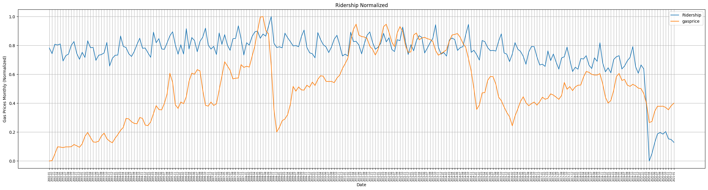
Test 3: Tukey's Honest Significance Difference (HSD) Test
At Significance level of α = 0.05
Because this is the Tukey's HSD Test, we will need three different Null Hypotheses and Alterantive Hypotheses
Null Hypothesis: The average ridership for low, medium, and high gas prices are the same.
1) Average of High gas prices = Average of Low gas prices
2) Average of High gas prices = Average of Medium gas prices
3) Average of Low gas prices = Average of Medium gas prices
Alternative Hypothesis:
1) Average of High gas prices ≠ Average of Low gas prices
2) Average of High gas prices ≠ Average of Medium gas prices
3) Average of Low gas prices ≠ Average of Medium gas prices
low_merge['Total Transit Ridership'] = low_merge['Total Transit Ridership'] #/ len(low_merge)
medium_merge['Total Transit Ridership'] = medium_merge['Total Transit Ridership'] #/ len(medium_merge)
high_merge['Total Transit Ridership'] = high_merge['Total Transit Ridership'] #/ len(high_merge)
all_ridership = pd.concat([
low_merge['Total Transit Ridership'],
medium_merge['Total Transit Ridership'],
high_merge['Total Transit Ridership']
])
group_labels = (
['Low'] * len(low_merge) +
['Medium'] * len(medium_merge) +
['High'] * len(high_merge)
)
tukey_result = pairwise_tukeyhsd(endog=all_ridership, groups=group_labels, alpha=0.05)
# Print the result
print(tukey_result) Multiple Comparison of Means - Tukey HSD, FWER=0.05
========================================================================
group1 group2 meandiff p-adj lower upper reject
------------------------------------------------------------------------
High Low -4720633.022 0.9641 -47990260.1244 38548994.0804 False
High Medium -41522946.8956 0.0 -63694268.9495 -19351624.8416 True
Low Medium -36802313.8736 0.1427 -82639577.4209 9034949.6738 False
------------------------------------------------------------------------
High Vs. Low is not statisticlally significant. Same with Low Vs. Medium. But Medium Vs. High is statistcally significant. We reject the second hypothesis, but fail to reject the rest.
group = ['Low', 'Medium', 'High']
low_avg = low_merge['Total Transit Ridership'].mean()
medium_avg = medium_merge['Total Transit Ridership'].mean()
high_avg = high_merge['Total Transit Ridership'].mean()
avg = [low_avg, medium_avg, high_avg]
plt.figure(figsize=(18,5))
plt.bar(group, avg, color = ['red', 'blue', 'green'])
plt.xlabel
plt.title("Average Rider for Gas Price Type")
plt.xlabel('Type of Gas price')
plt.ylabel('Rider')
plt.show()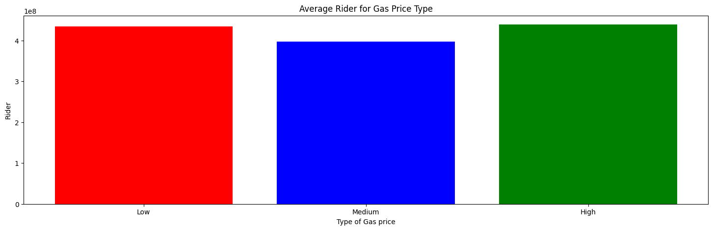
Conclusion: As demonstrated by Tukey's HSD and the Bar Chart, ridership is the lowest when gas prices is medium, which is $1.5 to $2.3. When gas prices are either too high or too low it means that there maybe external factors. A potential factors is the economy which prompts people to choose public transportation rather than their own cars. High gas prices means it is more expensive to drive a car, whereas low gas prices may indicate a recession or a loss of jobs.
Here, all the metrics of the transportation_df has been graphed to visualize the behavior and trends displayed by the data.
transportation_b_df = transportation_b_df[transportation_b_df['Date'] >= '2002-01-01']
transportation_columns = ['U.S. Airline Traffic - Total - Seasonally Adjusted', 'Transit Ridership - Other Transit Modes - Adjusted',
'Transit Ridership - Fixed Route Bus - Adjusted', 'Transit Ridership - Urban Rail - Adjusted', 'Highway Fuel Price - Regular Gasoline', 'Passenger Rail Passengers',
'Passenger Rail Total Train Miles', 'Personal Spending on Transportation - Gasoline and Other Energy Goods - Seasonally Adjusted'
]
for col in transportation_columns:
transportation_df[col] = pd.to_numeric(transportation_df[col], errors='coerce')
scaler = MinMaxScaler()
transportation_df[transportation_columns] = scaler.fit_transform(transportation_df[transportation_columns])
plt.figure(figsize=(14, 7))
colors = plt.cm.get_cmap('tab10', len(transportation_columns))\
for i, col in enumerate(transportation_columns):
plt.plot(transportation_df['Date'], transportation_df[col], label=col, color=colors(i), linewidth=2, alpha=0.8)
plt.title("Transportation Metrics Over Time (Normalized)")
plt.xlabel("Date")
plt.ylabel("Normalized Value")
plt.legend(loc="best", bbox_to_anchor=(1, 1))
plt.grid(True)
plt.tight_layout()
plt.show()/var/folders/kt/bb0_zk5n4x1g8hsp0gmxbnsm0000gn/T/ipykernel_7973/915874731.py:15: MatplotlibDeprecationWarning: The get_cmap function was deprecated in Matplotlib 3.7 and will be removed in 3.11. Use ``matplotlib.colormaps[name]`` or ``matplotlib.colormaps.get_cmap()`` or ``pyplot.get_cmap()`` instead.
colors = plt.cm.get_cmap('tab10', len(transportation_columns))\
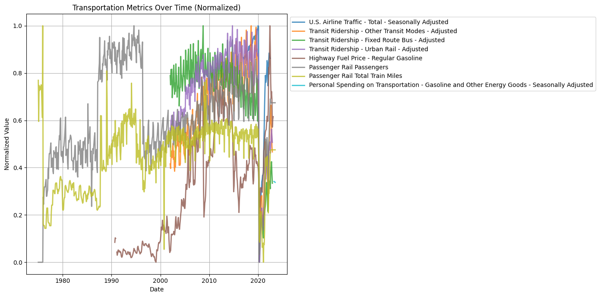
As you can see the multiple graphs overlapping each other making it unrecognizable. As such, dropping columns such as Personal Spending on Transportation and Highway Fuel Price can be dropped. It is also better to group some of the columns which share similaritie such as the Transit columns and the Passenger columns.
transportation_df['Transit Ridership Avg'] = transportation_df[['Transit Ridership - Fixed Route Bus - Adjusted', 'Transit Ridership - Other Transit Modes - Adjusted', 'Transit Ridership - Urban Rail - Adjusted']].mean(axis = 1)
transportation_df['Passenger Rail Avg'] = transportation_df[['Passenger Rail Passengers', 'Passenger Rail Total Train Miles']].mean(axis = 1)
transportation_df['Date'] = pd.to_datetime(transportation_df['Date'])
transportation_df = transportation_df[transportation_df['Date'] >= '2002-01-01']
transportation_avg_df = transportation_df[['Date', 'Transit Ridership Avg', 'Passenger Rail Avg']]
transportation_avg_columns = ['Transit Ridership Avg','Passenger Rail Avg',]
for col in transportation_avg_columns:
transportation_avg_df[col] = pd.to_numeric(transportation_avg_df[col], errors='coerce')
#\\\transportation_avg_df[transportation_avg_columns] = scaler.fit_transform(transportation_avg_df[transportation_avg_columns])
plt.figure(figsize=(14, 7))
colors = plt.cm.get_cmap('tab10', len(transportation_avg_columns)) # or 'tab20'
for i, col in enumerate(transportation_avg_columns):
plt.plot(transportation_avg_df['Date'], transportation_avg_df[col], label=col, color=colors(i), linewidth=2, alpha=0.8)
plt.title("Average Transportation Metrics Over Time (Normalized)")
plt.xlabel("Date")
plt.ylabel("Normalized Value")
plt.legend(loc="best", bbox_to_anchor=(1, 1))
plt.grid(True)
plt.tight_layout()
plt.show()/var/folders/kt/bb0_zk5n4x1g8hsp0gmxbnsm0000gn/T/ipykernel_7973/599374261.py:9: SettingWithCopyWarning:
A value is trying to be set on a copy of a slice from a DataFrame.
Try using .loc[row_indexer,col_indexer] = value instead
See the caveats in the documentation: https://pandas.pydata.org/pandas-docs/stable/user_guide/indexing.html#returning-a-view-versus-a-copy
transportation_avg_df[col] = pd.to_numeric(transportation_avg_df[col], errors='coerce')
/var/folders/kt/bb0_zk5n4x1g8hsp0gmxbnsm0000gn/T/ipykernel_7973/599374261.py:14: MatplotlibDeprecationWarning: The get_cmap function was deprecated in Matplotlib 3.7 and will be removed in 3.11. Use ``matplotlib.colormaps[name]`` or ``matplotlib.colormaps.get_cmap()`` or ``pyplot.get_cmap()`` instead.
colors = plt.cm.get_cmap('tab10', len(transportation_avg_columns)) # or 'tab20'
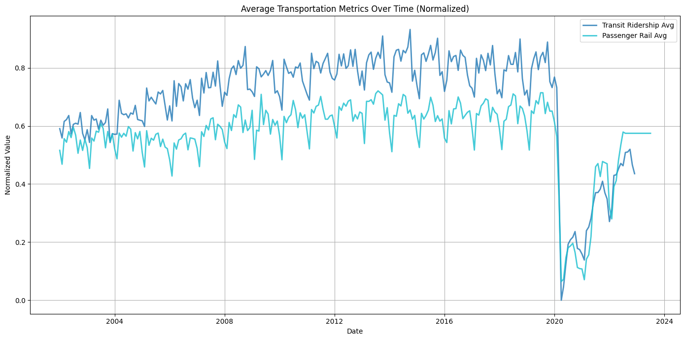
Combined columns regarding tarnsit into one by taking their average. Same is done for passengers on rail. This was done to reduce the number of plots in total and to get a general idea of transit and passengers on rail. All other columns are left as original. For both dataframes, intersection of the core of data begins from 2002. Hence, both dataframe's timeline begins at 2002.In addition, normalization allows for both dataframes to be compared and to improve visualization.
gasprices_df['Date'] = pd.to_datetime(gasprices_df['Date'])
gasprices_df = gasprices_df[gasprices_df['Date'] >= '2002-01-01']
plt.figure(figsize=(10, 6))
plt.plot(gasprices_b_df['Date'], gasprices_b_df['A1'], label='Gasoline Price', color='blue')
plt.grid(True)
plt.title('U.S. Gasoline Retail Prices (1995–2021)')
plt.xlabel('Year')
plt.ylabel('Price (USD per gallon)')
plt.legend()<matplotlib.legend.Legend at 0x1177e6490>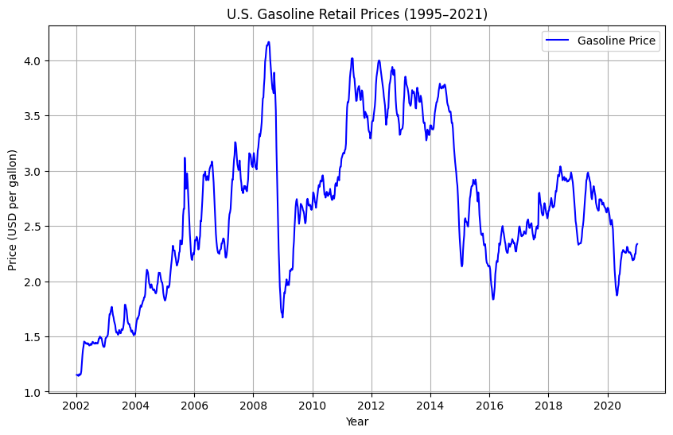
Here we will try to find a machine learning model that can predict gas prices based on parameters passed in
First, we will reimport the data to start fresh
import pandas as pd
from sklearn.model_selection import train_test_split, cross_val_score, StratifiedKFold
from sklearn.preprocessing import StandardScaler
#Load in dataframes
transportation_df = pd.read_csv('Monthly_Transportation_Statistics.csv')
gasprices_df = pd.read_csv('USGasanddieselprices.csv')
transportation_df['Date'] = pd.to_datetime(transportation_df['Date'])
gasprices_df['Date'] = pd.to_datetime(gasprices_df['Date'])
gasprices_df = gasprices_df[['Date', 'A1']]
transportation_df = transportation_df.loc[transportation_df['Date'] >= '01-01-1975']
gasprices_df.rename(columns={"A1": "Weekly Retail Gasoline Prices(All Grades Formulation)"}, inplace=True)
gasprices_df['Date'] = pd.to_datetime(gasprices_df['Date'])
gasprices_df = gasprices_df.groupby(pd.Grouper( key = 'Date', freq = 'ME')).agg({"Weekly Retail Gasoline Prices(All Grades Formulation)": 'mean'}).reset_index()
#Set index to date in order to merge
gasprices_df.set_index('Date', inplace = True)
transportation_df.set_index('Date', inplace = True)
#gasprices_df = gasprices_df.resample('M').mean()
#Convert to period so only year and month are used in order to merge dataframes
transportation_df.index = transportation_df.index.to_period('M')
gasprices_df.index = gasprices_df.index.to_period('M')
total_df = pd.merge( transportation_df, gasprices_df, on ='Date', how = 'outer')
total_df['Personal Spending on Transportation - Gasoline and Other Energy Goods - Seasonally Adjusted'] = total_df['Personal Spending on Transportation - Gasoline and Other Energy Goods - Seasonally Adjusted'].ffill()
display(total_df.head())/var/folders/kt/bb0_zk5n4x1g8hsp0gmxbnsm0000gn/T/ipykernel_7973/2749609281.py:7: UserWarning: Could not infer format, so each element will be parsed individually, falling back to `dateutil`. To ensure parsing is consistent and as-expected, please specify a format.
transportation_df['Date'] = pd.to_datetime(transportation_df['Date'])
| Index | Air Safety - General Aviation Fatalities | Highway Fatalities Per 100 Million Vehicle Miles Traveled | Highway Fatalities | U.S. Airline Traffic - Total - Seasonally Adjusted | U.S. Airline Traffic - International - Seasonally Adjusted | U.S. Airline Traffic - Domestic - Seasonally Adjusted | Transit Ridership - Other Transit Modes - Adjusted | Transit Ridership - Fixed Route Bus - Adjusted | Transit Ridership - Urban Rail - Adjusted | Freight Rail Intermodal Units | Freight Rail Carloads | Highway Vehicle Miles Traveled - All Systems | Highway Vehicle Miles Traveled - Total Rural | Highway Vehicle Miles Traveled - Other Rural | Highway Vehicle Miles Traveled - Rural Other Arterial | Highway Vehicle Miles Traveled - Rural Interstate | State and Local Government Construction Spending - Breakwater/Jetty | State and Local Government Construction Spending - Dam/Levee | State and Local Government Construction Spending - Conservation and Development | State and Local Government Construction Spending - Pump Station | State and Local Government Construction Spending - Line | State and Local Government Construction Spending - Water Treatment Plant | State and Local Government Construction Spending - Water Supply | State and Local Government Construction Spending - Line/Drain | State and Local Government Construction Spending - Waste Water Treatment Plant | State and Local Government Construction Spending - Waste Water | State and Local Government Construction Spending - Line/Pump Station | State and Local Government Construction Spending - Sewage Treatment Plant | State and Local Government Construction Spending - Sewage / Dry Waste | State and Local Government Construction Spending - Sewage and Waste Disposal | State and Local Government Construction Spending - Rest Facility | State and Local Government Construction Spending - Bridge | State and Local Government Construction Spending - Lighting | State and Local Government Construction Spending - Pavement | State and Local Government Construction Spending - Highway and Street | State and Local Government Construction Spending - Power | State and Local Government Construction Spending - Dock / Marina | State and Local Government Construction Spending - Water | State and Local Government Construction Spending - Mass Transit | State and Local Government Construction Spending - Land Passenger Terminal | State and Local Government Construction Spending - Land | State and Local Government Construction Spending - Runway | State and Local Government Construction Spending - Air Passenger Terminal | State and Local Government Construction Spending - Air | State and Local Government Construction Spending - Transportation | State and Local Government Construction Spending - Park / Camp | State and Local Government Construction Spending - Neighborhood Center | State and Local Government Construction Spending - Social Center | State and Local Government Construction Spending - Convention Center | State and Local Government Construction Spending - Performance / Meeting Center | State and Local Government Construction Spending - Sports | State and Local Government Construction Spending - Amusement and Recreation | State and Local Government Construction Spending - Fire & Rescue | State and Local Government Construction Spending - Other Public Safety | State and Local Government Construction Spending - Police & Sheriff | State and Local Government Construction Spending - Detention | State and Local Government Construction Spending - Correctional | State and Local Government Construction Spending - Public Safety | State and Local Government Construction Spending - Library / Archive | State and Local Government Construction Spending - Other Educational | State and Local Government Construction Spending - Infrastructure | State and Local Government Construction Spending - Sports & Recreation | State and Local Government Construction Spending - Dormitory | State and Local Government Construction Spending - Instructional | State and Local Government Construction Spending - Higher Education | State and Local Government Construction Spending - High School | State and Local Government Construction Spending - Middle School / Junior High | State and Local Government Construction Spending - Elementary Schools | State and Local Government Construction Spending - Primary/Secondary Schools | State and Local Government Construction Spending - Educational | State and Local Government Construction Spending - Special Care | State and Local Government Construction Spending - Medical Building | State and Local Government Construction Spending - Hospital | State and Local Government Construction Spending - Health Care | State and Local Government Construction Spending - Parking | State and Local Government Construction Spending - Automotive | State and Local Government Construction Spending - Commercial | State and Local Government Construction Spending - Office | State and Local Government Construction Spending - Non Residential | State and Local Government Construction Spending - Multi Family | State and Local Government Construction Spending - Residential | State and Local Government Construction Spending - Total | National Highway Construction Cost Index (NHCCI) | Highway Fuel Price - On-highway Diesel | Highway Fuel Price - Regular Gasoline | Transportation Employment - Pipeline Transportation | Transportation Employment - Water Transportation | Transportation Employment - Rail Transportation | Transportation Employment - Air Transportation | Transportation Employment - Transit and ground passenger transportation | Transportation Employment - Truck Transportation | Personal Spending on Transportation - Transportation Services - Seasonally Adjusted | Personal Spending on Transportation - Gasoline and Other Energy Goods - Seasonally Adjusted | Personal Spending on Transportation - Motor Vehicles and Parts - Seasonally Adjusted | Unemployment Rate - Seasonally Adjusted | Labor Force Participation Rate - Seasonally Adjusted | Unemployed - Seasonally Adjusted | Real Gross Domestic Product - Seasonally Adjusted | Passenger Rail Passengers | Passenger Rail Passenger Miles | Passenger Rail Total Train Miles | Passenger Rail Employee Hours Worked | Passenger Rail Yard Switching Miles | Passenger Rail Total Reports | U.S. Waterway Tonnage | Amtrak On-time Performance | Rail Fatalities | Rail Fatalities at Highway-Rail Crossings | Trespasser Fatalities Not at Highwaya-Rail Crossings | Transportation Services Index - Freight | Transportation Services Index - Passenger | Transportation Services Index - Combined | U.S.-Canada Incoming Person Crossings | U.S.-Canada Incoming Truck Crossings | U.S.-Mexico Incoming Person Crossings | Air Safety - Air Taxi and Commuter Fatalities | Heavy truck sales | U.S.-Mexico Incoming Truck Crossings | Light truck sales | Auto sales | Air Safety - Air Carrier Fatalities | U.S. Air Carrier Cargo (millions of revenue ton-miles) - International | Truck tonnage index | U.S. Air Carrier Cargo (millions of revenue ton-miles) - Domestic | Heavy truck sales SAAR (millions) | U.S. Airline Traffic - Total - Non Seasonally Adjusted | Light truck sales SAAR (millions) | U.S. Airline Traffic - International - Non Seasonally Adjusted | Auto sales SAAR (millions) | U.S. Airline Traffic - Domestic - Non Seasonally Adjusted | Transborder - Total North American Freight | Transborder - U.S. - Mexico Freight | U.S. marketing air carriers on-time performance (percent) | Transborder - U.S. - Canada Freight | Weekly Retail Gasoline Prices(All Grades Formulation) | |
|---|---|---|---|---|---|---|---|---|---|---|---|---|---|---|---|---|---|---|---|---|---|---|---|---|---|---|---|---|---|---|---|---|---|---|---|---|---|---|---|---|---|---|---|---|---|---|---|---|---|---|---|---|---|---|---|---|---|---|---|---|---|---|---|---|---|---|---|---|---|---|---|---|---|---|---|---|---|---|---|---|---|---|---|---|---|---|---|---|---|---|---|---|---|---|---|---|---|---|---|---|---|---|---|---|---|---|---|---|---|---|---|---|---|---|---|---|---|---|---|---|---|---|---|---|---|---|---|---|---|---|---|---|---|---|---|---|
| Date | ||||||||||||||||||||||||||||||||||||||||||||||||||||||||||||||||||||||||||||||||||||||||||||||||||||||||||||||||||||||||||||||||||||||||
| 1975-01 | 336 | NaN | NaN | NaN | NaN | NaN | NaN | NaN | NaN | NaN | NaN | NaN | NaN | NaN | NaN | NaN | NaN | NaN | NaN | NaN | NaN | NaN | NaN | NaN | NaN | NaN | NaN | NaN | NaN | NaN | NaN | NaN | NaN | NaN | NaN | NaN | NaN | NaN | NaN | NaN | NaN | NaN | NaN | NaN | NaN | NaN | NaN | NaN | NaN | NaN | NaN | NaN | NaN | NaN | NaN | NaN | NaN | NaN | NaN | NaN | NaN | NaN | NaN | NaN | NaN | NaN | NaN | NaN | NaN | NaN | NaN | NaN | NaN | NaN | NaN | NaN | NaN | NaN | NaN | NaN | NaN | NaN | NaN | NaN | NaN | NaN | NaN | NaN | NaN | NaN | NaN | NaN | NaN | NaN | NaN | NaN | NaN | NaN | 5.957035e+12 | 0.0 | 2624696.0 | 4134425.0 | 1501878.0 | 0.0 | 2.0 | NaN | NaN | 145.0 | 88.0 | 34.0 | NaN | NaN | NaN | NaN | NaN | NaN | NaN | 23300.0 | NaN | 122400.0 | 572500.0 | NaN | NaN | NaN | NaN | 334000.0 | NaN | 1681000.0 | NaN | 7957000.0 | NaN | NaN | NaN | NaN | NaN | NaN |
| 1975-02 | 337 | NaN | NaN | NaN | NaN | NaN | NaN | NaN | NaN | NaN | NaN | NaN | NaN | NaN | NaN | NaN | NaN | NaN | NaN | NaN | NaN | NaN | NaN | NaN | NaN | NaN | NaN | NaN | NaN | NaN | NaN | NaN | NaN | NaN | NaN | NaN | NaN | NaN | NaN | NaN | NaN | NaN | NaN | NaN | NaN | NaN | NaN | NaN | NaN | NaN | NaN | NaN | NaN | NaN | NaN | NaN | NaN | NaN | NaN | NaN | NaN | NaN | NaN | NaN | NaN | NaN | NaN | NaN | NaN | NaN | NaN | NaN | NaN | NaN | NaN | NaN | NaN | NaN | NaN | NaN | NaN | NaN | NaN | NaN | NaN | NaN | NaN | NaN | NaN | NaN | NaN | NaN | NaN | NaN | NaN | NaN | NaN | NaN | NaN | 0.0 | 2275826.0 | 3600736.0 | 1371524.0 | 0.0 | 2.0 | NaN | NaN | 118.0 | 77.0 | 23.0 | NaN | NaN | NaN | NaN | NaN | NaN | NaN | 23100.0 | NaN | 127900.0 | 678600.0 | NaN | NaN | NaN | NaN | 321000.0 | NaN | 1665000.0 | NaN | 9111000.0 | NaN | NaN | NaN | NaN | NaN | NaN |
| 1975-03 | 338 | NaN | NaN | NaN | NaN | NaN | NaN | NaN | NaN | NaN | NaN | NaN | NaN | NaN | NaN | NaN | NaN | NaN | NaN | NaN | NaN | NaN | NaN | NaN | NaN | NaN | NaN | NaN | NaN | NaN | NaN | NaN | NaN | NaN | NaN | NaN | NaN | NaN | NaN | NaN | NaN | NaN | NaN | NaN | NaN | NaN | NaN | NaN | NaN | NaN | NaN | NaN | NaN | NaN | NaN | NaN | NaN | NaN | NaN | NaN | NaN | NaN | NaN | NaN | NaN | NaN | NaN | NaN | NaN | NaN | NaN | NaN | NaN | NaN | NaN | NaN | NaN | NaN | NaN | NaN | NaN | NaN | NaN | NaN | NaN | NaN | NaN | NaN | NaN | NaN | NaN | NaN | NaN | NaN | NaN | NaN | NaN | NaN | NaN | 0.0 | 2520943.0 | 4067192.0 | 1516787.0 | 0.0 | 2.0 | NaN | NaN | 127.0 | 84.0 | 24.0 | NaN | NaN | NaN | NaN | NaN | NaN | NaN | 26800.0 | NaN | 146600.0 | 662000.0 | NaN | NaN | NaN | NaN | 300000.0 | NaN | 1608000.0 | NaN | 7612000.0 | NaN | NaN | NaN | NaN | NaN | NaN |
| 1975-04 | 339 | NaN | NaN | NaN | NaN | NaN | NaN | NaN | NaN | NaN | NaN | NaN | NaN | NaN | NaN | NaN | NaN | NaN | NaN | NaN | NaN | NaN | NaN | NaN | NaN | NaN | NaN | NaN | NaN | NaN | NaN | NaN | NaN | NaN | NaN | NaN | NaN | NaN | NaN | NaN | NaN | NaN | NaN | NaN | NaN | NaN | NaN | NaN | NaN | NaN | NaN | NaN | NaN | NaN | NaN | NaN | NaN | NaN | NaN | NaN | NaN | NaN | NaN | NaN | NaN | NaN | NaN | NaN | NaN | NaN | NaN | NaN | NaN | NaN | NaN | NaN | NaN | NaN | NaN | NaN | NaN | NaN | NaN | NaN | NaN | NaN | NaN | NaN | NaN | NaN | NaN | NaN | NaN | NaN | NaN | NaN | NaN | NaN | 5.999610e+12 | 0.0 | 2478477.0 | 4000157.0 | 1583115.0 | 0.0 | 2.0 | NaN | NaN | 96.0 | 59.0 | 27.0 | NaN | NaN | NaN | NaN | NaN | NaN | NaN | 25600.0 | NaN | 168500.0 | 651100.0 | NaN | NaN | NaN | NaN | 282000.0 | NaN | 1846000.0 | NaN | 7287000.0 | NaN | NaN | NaN | NaN | NaN | NaN |
| 1975-05 | 340 | NaN | NaN | NaN | NaN | NaN | NaN | NaN | NaN | NaN | NaN | NaN | NaN | NaN | NaN | NaN | NaN | NaN | NaN | NaN | NaN | NaN | NaN | NaN | NaN | NaN | NaN | NaN | NaN | NaN | NaN | NaN | NaN | NaN | NaN | NaN | NaN | NaN | NaN | NaN | NaN | NaN | NaN | NaN | NaN | NaN | NaN | NaN | NaN | NaN | NaN | NaN | NaN | NaN | NaN | NaN | NaN | NaN | NaN | NaN | NaN | NaN | NaN | NaN | NaN | NaN | NaN | NaN | NaN | NaN | NaN | NaN | NaN | NaN | NaN | NaN | NaN | NaN | NaN | NaN | NaN | NaN | NaN | NaN | NaN | NaN | NaN | NaN | NaN | NaN | NaN | NaN | NaN | NaN | NaN | NaN | NaN | NaN | NaN | 0.0 | 2561119.0 | 4050197.0 | 1544540.0 | 0.0 | 2.0 | NaN | NaN | 134.0 | 74.0 | 39.0 | NaN | NaN | NaN | NaN | NaN | NaN | NaN | 25000.0 | NaN | 187000.0 | 730100.0 | NaN | NaN | NaN | NaN | 281000.0 | NaN | 1985000.0 | NaN | 7723000.0 | NaN | NaN | NaN | NaN | NaN | NaN |
Next, lets see how skewed our data is
hist_df = transportation_df[['U.S. Airline Traffic - Total - Seasonally Adjusted', 'Transit Ridership - Other Transit Modes - Adjusted',
'Transit Ridership - Fixed Route Bus - Adjusted', 'Transit Ridership - Urban Rail - Adjusted', 'Highway Fuel Price - Regular Gasoline', 'Passenger Rail Passengers',
'Passenger Rail Total Train Miles']]
for element in hist_df.columns:
plt.figure()
hist_df[element].hist(bins = 10, edgecolor='black')
plt.title(element)
plt.xlabel(element)
plt.ylabel("Frequency")
plt.grid(False)
plt.show()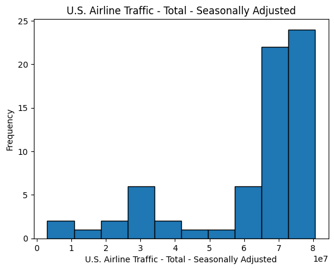
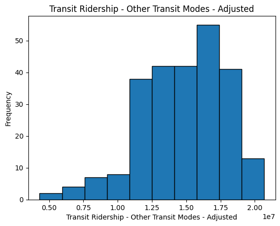
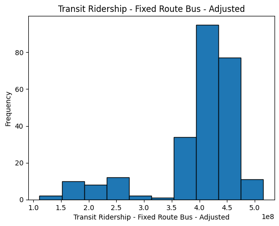
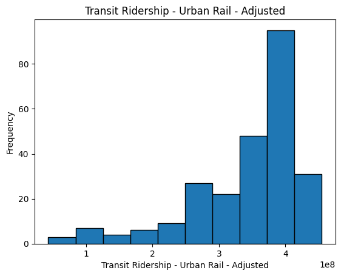
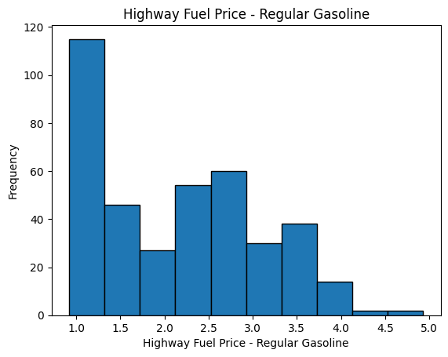
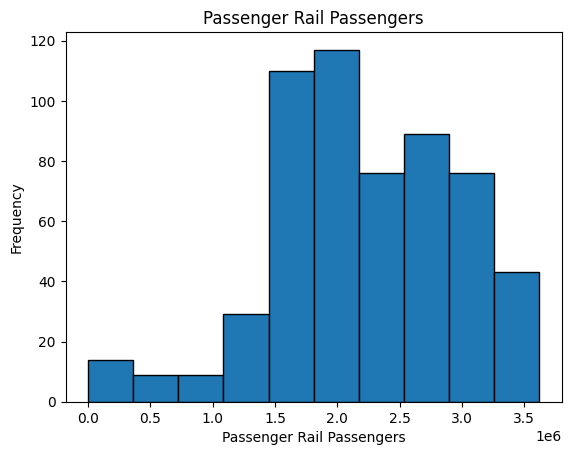
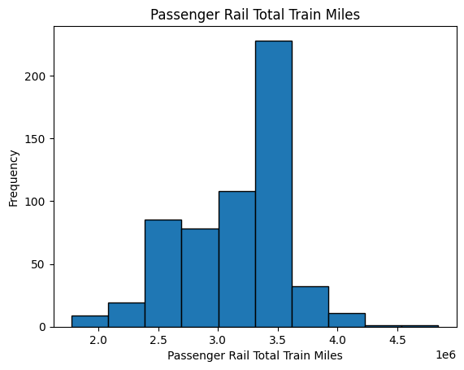
The histograms show our features are skewed, to solve this, we will apply log scaling in addition to standard scaling
withoutdate_df = total_df[total_df.index >='2017-01']
withoutdate_df = withoutdate_df[withoutdate_df.index <= '2021-01']
withoutdate_df = withoutdate_df[['U.S. Airline Traffic - Total - Seasonally Adjusted', 'Transit Ridership - Other Transit Modes - Adjusted',
'Transit Ridership - Fixed Route Bus - Adjusted', 'Transit Ridership - Urban Rail - Adjusted', 'Passenger Rail Passengers',
'Passenger Rail Total Train Miles', 'Weekly Retail Gasoline Prices(All Grades Formulation)']]
#display(withoutdate_df)
print(withoutdate_df.isna().sum().sum())
#display(df_combined)
X = withoutdate_df[['U.S. Airline Traffic - Total - Seasonally Adjusted', 'Transit Ridership - Other Transit Modes - Adjusted',
'Transit Ridership - Fixed Route Bus - Adjusted', 'Transit Ridership - Urban Rail - Adjusted', 'Passenger Rail Passengers',
'Passenger Rail Total Train Miles']]
Y = withoutdate_df[['Weekly Retail Gasoline Prices(All Grades Formulation)']]
X = np.log(X)
Y = np.log(Y)
X_train, X_test, y_train, y_test = train_test_split(X, Y, test_size = 0.2, random_state = 42)
scaler = StandardScaler()
scaler2 = StandardScaler()
X_train_scaled = scaler.fit_transform(X_train)
y_train_scaled = scaler2.fit_transform(y_train)
X_test_scaled = scaler.transform(X_test)
y_test_scaled = scaler2.transform(y_test)
0
First, we will try a linear regression model
from sklearn.linear_model import LinearRegression
from sklearn.metrics import accuracy_score, classification_report, confusion_matrix, silhouette_score
from sklearn.metrics import mean_squared_error, r2_score
from sklearn.pipeline import make_pipeline
np.random.seed(42)
model = make_pipeline(StandardScaler(), LinearRegression())
model.fit(X_train, y_train)
pred = model.predict(X_test)
pred_train = model.predict(X_train)
print(f"Training MSE(Mean Squared Error): {mean_squared_error(y_train, pred_train)}")
print(f"Validation MSE(Mean Squared Error): {mean_squared_error(y_test, pred)}")
r_score = r2_score(y_test, pred)
print(f"Validation R^2 score: {r_score}")Training MSE(Mean Squared Error): 0.0031260724630082976
Validation MSE(Mean Squared Error): 0.0024719947501316403
Validation R^2 score: 0.7686160981201605
This model is okay, however we will try more intricate models below to see if we can do better
Next, we will try a polynomial regression model
from sklearn.preprocessing import PolynomialFeatures
from sklearn.pipeline import make_pipeline
import matplotlib.pyplot as plt
poly = PolynomialFeatures(degree = 2)
linear = LinearRegression()
model = make_pipeline(poly, StandardScaler(), linear)
model.fit(X_train, y_train)
pred = model.predict(X_test)
pred_train = model.predict(X_train)
print(f"Training MSE(Mean Squared Error): {mean_squared_error(y_train, pred_train)}")
print(f"Validation MSE(Mean Squared Error): {mean_squared_error(y_test, pred)}")
r_score = r2_score(y_test, pred)
print(f"Validation R^2 score: {r_score}")Training MSE(Mean Squared Error): 0.0002423835020423189
Validation MSE(Mean Squared Error): 0.696818703965495
Validation R^2 score: -64.22369459635905
This model is terrible, we will try a random forest next
from sklearn.ensemble import RandomForestRegressor
random = make_pipeline(StandardScaler(), RandomForestRegressor(random_state = 42))
random.fit(X_train, y_train)
pred = random.predict(X_test)
pred_train = random.predict(X_train)
print(f"Training MSE(Mean Squared Error): {mean_squared_error(y_train, pred_train)}")
print(f"Validation MSE(Mean Squared Error): {mean_squared_error(y_test, pred)}")
r_score = r2_score(y_test, pred)
print(f"Validation R^2 score: {r_score}")Training MSE(Mean Squared Error): 0.00029051687467134533
Validation MSE(Mean Squared Error): 0.00215390551290036
Validation R^2 score: 0.7983899189798674
/Library/Frameworks/Python.framework/Versions/3.13/lib/python3.13/site-packages/sklearn/base.py:1389: DataConversionWarning: A column-vector y was passed when a 1d array was expected. Please change the shape of y to (n_samples,), for example using ravel().
return fit_method(estimator, *args, **kwargs)
While the linear and random forest models give acceptable results, the polynomial is terrible. One thing that might be causing this is lack to data, in order to get more we should remove airline usage as it has mostly NaN values from 2002 to 2017. Lets try without using airline usage so that we can start at 2002
withoutdate_df = total_df[total_df.index >= '2002-01']
withoutdate_df = withoutdate_df[withoutdate_df.index <= '2021-01']
withoutdate_df = withoutdate_df[[ 'Transit Ridership - Other Transit Modes - Adjusted',
'Transit Ridership - Fixed Route Bus - Adjusted', 'Transit Ridership - Urban Rail - Adjusted', 'Passenger Rail Passengers',
'Passenger Rail Total Train Miles', 'Weekly Retail Gasoline Prices(All Grades Formulation)']]
#display(withoutdate_df)
print(withoutdate_df.isna().sum().sum())
X = withoutdate_df[[ 'Transit Ridership - Other Transit Modes - Adjusted',
'Transit Ridership - Fixed Route Bus - Adjusted', 'Transit Ridership - Urban Rail - Adjusted', 'Passenger Rail Passengers',
'Passenger Rail Total Train Miles']]
Y = withoutdate_df[['Weekly Retail Gasoline Prices(All Grades Formulation)']]
X = np.log(X)
Y = np.log(Y)
X_train, X_test, y_train, y_test = train_test_split(X, Y, test_size = 0.2, random_state = 42)
scaler = StandardScaler()
scaler2 = StandardScaler()
X_train_scaled = scaler.fit_transform(X_train)
y_train_scaled = scaler2.fit_transform(y_train)
X_test_scaled = scaler.transform(X_test)
y_test_scaled = scaler2.transform(y_test)0
Linear regression model- without airline
from sklearn.linear_model import LinearRegression
from sklearn.metrics import accuracy_score, classification_report, confusion_matrix, silhouette_score
from sklearn.metrics import mean_squared_error, r2_score
np.random.seed(42)
model = make_pipeline(StandardScaler(), LinearRegression())
model.fit(X_train, y_train)
pred = model.predict(X_test)
pred_train = model.predict(X_train)
print(f"Training MSE(Mean Squared Error): {mean_squared_error(y_train, pred_train)}")
print(f"Validation MSE(Mean Squared Error): {mean_squared_error(y_test, pred)}")
r_score = r2_score(y_test, pred)
print(f"Validation R^2 score: {r_score}")Training MSE(Mean Squared Error): 0.043717749833453674
Validation MSE(Mean Squared Error): 0.03852005609599995
Validation R^2 score: 0.4545194692186061
This model is pretty bad, but to be sure we must try other models without airline data as well
Polynomial without airline
from sklearn.preprocessing import PolynomialFeatures
from sklearn.pipeline import make_pipeline
import matplotlib.pyplot as plt
poly = PolynomialFeatures(degree = 2)
linear = LinearRegression()
model = make_pipeline(StandardScaler(), poly, linear)
model.fit(X_train, y_train)
prediction_poly = model.predict(X_test)
pred_train = model.predict(X_train)
print(f"Training MSE(Mean Squared Error): {mean_squared_error(y_train, pred_train)}")
print(f"Validation MSE(Mean Squared Error): {mean_squared_error(y_test, prediction)}")
r_score = r2_score(y_test, prediction)
print(f"Validation R^2 score: {r_score}")Training MSE(Mean Squared Error): 0.018177315846888465
Validation MSE(Mean Squared Error): 0.01593959989331937
Validation R^2 score: 0.7742801467219621
This model is pretty good, we will try a random forest one one last time
plt.figure(figsize=(6,6))
plt.scatter(y_test, prediction_poly, alpha=0.7)
plt.plot([y_test.min(), y_test.max()],
[prediction_poly.min(), prediction_poly.max()],
linestyle='--', color='k', linewidth=2)
plt.xlabel("True Gas Price")
plt.ylabel("Predicted Gas Price")
plt.title("Actual vs. Predicted")
plt.grid(True, linestyle=':', alpha=0.5)
plt.show()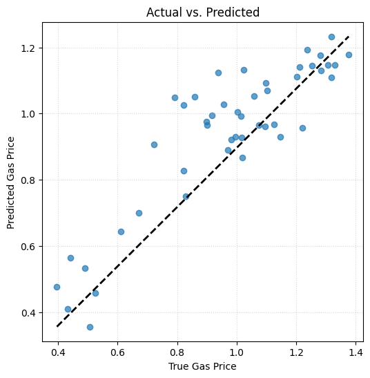
Random Forest, no airine
from sklearn.ensemble import RandomForestRegressor
random = make_pipeline(StandardScaler(), RandomForestRegressor(random_state = 42))
random.fit(X_train, y_train)
pred = random.predict(X_test)
pred_train = random.predict(X_train)
print(f"Training MSE(Mean Squared Error): {mean_squared_error(y_train, pred_train)}")
print(f"Validation MSE(Mean Squared Error): {mean_squared_error(y_test, pred)}")
r_score = r2_score(y_test, pred)
print(f"Validation R^2 score: {r_score}")/Library/Frameworks/Python.framework/Versions/3.13/lib/python3.13/site-packages/sklearn/base.py:1389: DataConversionWarning: A column-vector y was passed when a 1d array was expected. Please change the shape of y to (n_samples,), for example using ravel().
return fit_method(estimator, *args, **kwargs)
Training MSE(Mean Squared Error): 0.0031688582605115326
Validation MSE(Mean Squared Error): 0.01972517380836138
Validation R^2 score: 0.7206728294495517
Lastly, lets see if making a neural network gives us any better predictions than the machine learning models
from sklearn.neural_network import MLPRegressor
from sklearn.model_selection import KFold, cross_val_score
kf = KFold(n_splits=5, shuffle=True, random_state=42)
# a simple 2-layer MLP: 50 neurons each, ReLU activations
mlp = MLPRegressor(
hidden_layer_sizes=(150, 75, 37),
activation='relu',
alpha=1e-5, # L2 penalty (regularization)
max_iter=10000,
random_state=42
)
pipe_mlp = make_pipeline(StandardScaler(), mlp)
# 5-fold R²
r2 = cross_val_score(pipe_mlp, X_train, y_train.values.ravel(), cv=kf, scoring='r2')
print("MLP R2 mean:", np.round(r2.mean(), 3))
pipe_mlp.fit(X_train, y_train.values.ravel())
y_pred = pipe_mlp.predict(X_test)
print("MSE: ",mean_squared_error(y_test,y_pred))
print("R2",r2_score(y_test,y_pred))MLP R2 mean: 0.687
MSE: 0.01973646055439967
R2 0.7205129984201155
In order to determine whether a model's performance is good or bad we look at two key performance metrics: MSE(Mean Squared Error) and R^2(R Squared) score. The low mean squared error and high R squared score indicates that a model fits well with the data it has been trained on and also performs well on unseen data. To be more specific, a low mean squared error means that the mean squared error margin which represents how far the predicted y values are from the actual y values is low indicating that the predicted values are very near the actual y values. A high R squared value means that the model explains a large proportion of variance in the dependent variable, gas prices, which indicate a strong correlation between the independent variables and the dependent variable.
The low mean squared error and high R squared score indicates that our model fits well with the data it has been trained on and also performs well on unseen data. The low mean squared error value represents the error margin between the predicted y value and the actual y value. A lower error percentage means that our predicted y values are much closer to the actual y values. A high r squared value means that a large proportion of the variance is captured by the dependent variable, the gas price, which also leads to the same conclusion our mean squared error made which is our predicted y values closely align with the actual y values.
Based on this information our best model is the polynomial without airline model. This is because not only is the MSE values for training and validation small but the difference between the two values is small which indicates that the model is not overfitted. It can generalize better with unseen data compared to training data. Also the R squared value is high which shows that the model explains a large proportion of variance in the dependent variable.
While the Random Forest model with the airline column has a higher R squared value and lower MSE, the trainig MSE is suspiciously low, and the difference between the training MSE and the Validation MSE is higher, indicating that the model is overfitting, thus polynomial without airline is the best
plt.figure(figsize=(6,6))
plt.scatter(y_test, prediction_poly, alpha=0.7)
plt.plot([y_test.min(), y_test.max()],
[prediction_poly.min(), prediction_poly.max()],
linestyle='--', color='k', linewidth=2)
plt.xlabel("True Gas Price")
plt.ylabel("Predicted Gas Price")
plt.title("Actual vs. Predicted")
plt.grid(True, linestyle=':', alpha=0.5)
plt.show()This shows the predicted versus actual values for the polynomial regression model without the airline column. The closer a data point is to the dashed line, the closer it is to the actual value. This shows that the data points are really close to their actual values, but not exact, meaning there is no overfitting.
Overall we were able to make a model that predicts gas prices based on different transportation metrics. We discovered that our data was missing in different time frame blocks for different features, meaning it could not be imputed. On one hand, we set our time frame from 2017 to 2021 as this was the period where all of our chosen features had no NaNs. But this came at the cost of datapoints. Whereas on the other hand, we set our time frame from 2002 to 2021 as this was earliest time period where ⅞ of our chosen features had data. But this came at the cost of occasional NaNs. We weighed the benefits and in the end decided to use the longer time frame. This improved the accuracy of our models since more data would yield more accuracy. The shorter time frame was severely prone to overfitting. However, to improve our model, we decided to stop using Air Transportation usage as a feature since it did not have data for most of the time frame from 2002 to 2021. We accounted for data skewing by applying a log transformation to all data points. This led to us concluding that the polynomial regression model was the best.
Through hypothesis testing, we found that our initial idea that high gas prices led to high transportation usage was correct, however we also found that low gas prices also had high transit usage. Meaning that transit usage did have a correlation with gas prices, it just wasn’t the one we were expecting and was not easy to predict. Because of the complexity, a machine learning model was needed to explore if transportation metrics in general can be used to predict gas prices. Our results indicated that the relationship between them was non linear and depended on external factors.
This is significant because it proves there is a relationship between gas prices and different forms of transportation metrics. This also disproves our initial assumption, which was intuition that everyone could agree upon, that an increase in gas prices correlates to an increase in public transportation. Furthermore, gas prices, have a heavy correlation with the economy. What this means is that public transportation metrics, like bus and rail usage, can be used to determine the health of the economy. Overall, this project aims to discover the relationship between gas prices and transportation metrics. We found that the polynomial model best accomplishes this. This model’s high accuracy can be used to predict future relations as well.